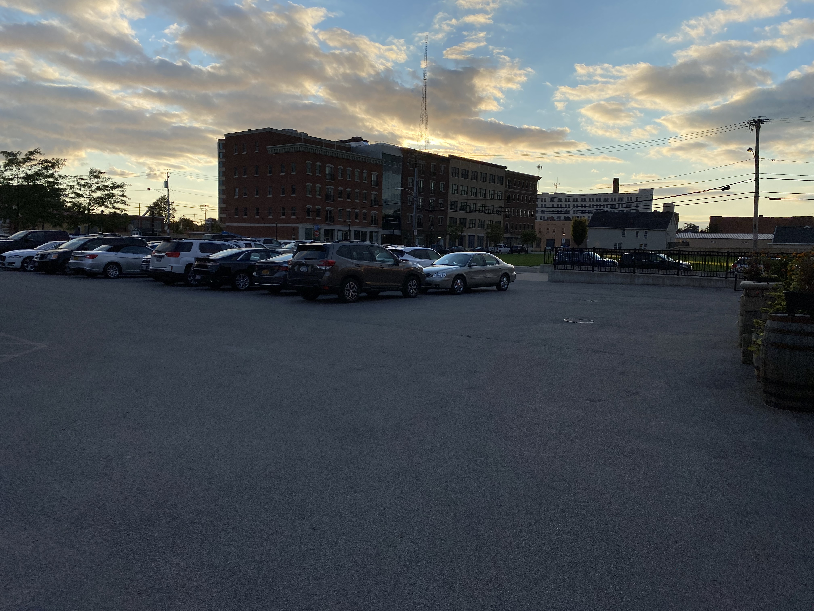

Last week, we went to our first live event of sorts, a fundraiser for The Service Collaborative at Flying Bison in Buffalo. A few classmates and I got our first real experience with live interviews in a public environment, and it led to some interesting conversations. While natural, uncontrolled settings give better and more fluid interviews, they present many challenges. A few of these challenges include actually getting interviewees, asking relevant questions and getting the sound right.
As I stated before, public events and natural environments often give way to better interviews, however, getting folks to interview is a challenge in itself. We had our professor, Katie, guide us through and introduce us to
 folk. However, when we were let loose and on our own, it was much more difficult to ascertain who was worth talking to. On top of this- some folks simply do not want to be interviewed, or are busy, and we saw a bit of that during the event. Once we acquired interviewees, it was also difficult to keep relevant questions flowing. For myself, I was often intently listening to who I was speaking to, and trying to really understand what they had to say, and so I wasn’t really thinking about my follow up questions. This led to a few lulls in the conversation and I feel like that is an area I could really improve on. I think I could also improve on the questions I actually ask, as not everybody thinks and perceives things the way I do. While I may understand something, or not ask a certain question, somebody else may not, or have a question they’d like to ask. Finally, getting the sound right in a natural environment was a bit of a nightmare. There were loud noises and crowds everywhere, so we had to try and get away from the commotion to get audio that wasn’t jumbled and just bad. There aren’t many quiet places at an event in a bar, but my classmates and I did the best we could.
folk. However, when we were let loose and on our own, it was much more difficult to ascertain who was worth talking to. On top of this- some folks simply do not want to be interviewed, or are busy, and we saw a bit of that during the event. Once we acquired interviewees, it was also difficult to keep relevant questions flowing. For myself, I was often intently listening to who I was speaking to, and trying to really understand what they had to say, and so I wasn’t really thinking about my follow up questions. This led to a few lulls in the conversation and I feel like that is an area I could really improve on. I think I could also improve on the questions I actually ask, as not everybody thinks and perceives things the way I do. While I may understand something, or not ask a certain question, somebody else may not, or have a question they’d like to ask. Finally, getting the sound right in a natural environment was a bit of a nightmare. There were loud noises and crowds everywhere, so we had to try and get away from the commotion to get audio that wasn’t jumbled and just bad. There aren’t many quiet places at an event in a bar, but my classmates and I did the best we could.
For my first experience doing a live interview- I’d say it went pretty well. Even though there were a few hiccups along the way, I learned a lot and got to know my classmates better. After all, the best way to learn is to do.
